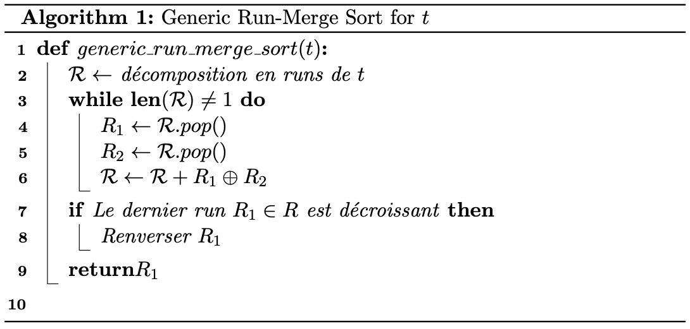
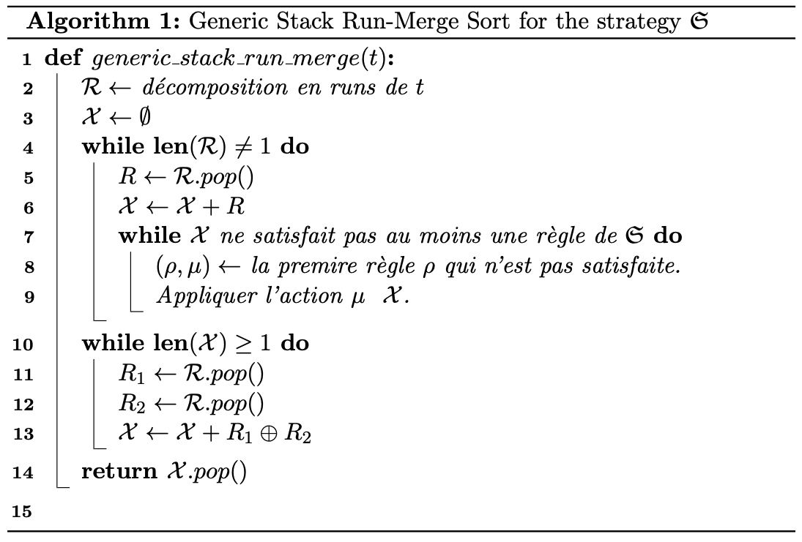
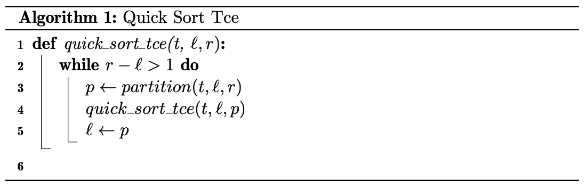
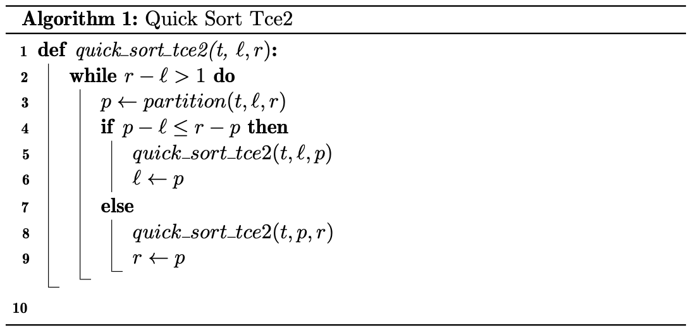

TP5 : Algorithmes de tri¶
Note
Les objectifs du TP :
Découvrir d’autres algorithmes de tris
Améliorer quick_sort (du moins essayer)
Comparer les performances des algorithmes vus
Un nouveau tri : le Bucket Sort¶
Note
Le Bucket Sort est particulièrement utile pour trier des valeurs qui sont uniformément distribuées dans un intervalle donné, comme dans le cas de nombres dans l’intervalle [0,1[ (c’est-à-dire, tous les nombres entre 0 inclus et 1 exclu).
Voici comment fonctionne le Bucket Sort pour trier des valeurs dans l’intervalle [0,1[:
Tout d’abord, vous devez déterminer le nombre de buckets dont vous avez besoin. Dans ce cas, il est logique de choisir le nombre de buckets égal au nombre de valeurs à trier. Cela signifie que chaque bucket ne devrait contienir qu’une seule valeur, puisque les nombres sont supposés uniformément distribués.
Ensuite, vous devez parcourir la liste des valeurs à trier et les placer dans les buckets appropriés en fonction de leur valeur. Pour cela, vous multipliez chaque valeur par le nombre de buckets et vous arrondissez à l’entier inférieur pour obtenir l’indice du bucket approprié. Par exemple, si vous avez la liste suivante de \(7\) nombres entre \(0\) et \(1\) : \([0.54, 0.23, 0.10, 0.72, 0.43, 0.99, 0.24]\) et que vous avez décidé d’utiliser \(7\) buckets, vous pouvez placer les éléments dans les buckets comme suit : \([[0.1], [0.23, 0.24], [], [0.54, 0.43], [], [0.72], [0.99]]\).
Maintenant que les éléments sont répartis dans les buckets, vous pouvez trier chaque bucket individuellement en utilisant un autre algorithme de tri (par exemple, insertion sort). Une fois que chaque bucket a été trié, vous pouvez les concaténer pour obtenir la liste triée finale.
Exercice : L’obligation pour les nombres à trier d’être dans l’intervalle \([0,1[\) semble très restrictive. Si tab est une liste d’entiers quelconques, quelles opérations peut-on effectuer sur ses éléments pour se ramener à un l’intervalle \([0,1[\) ?
Solution
Il suffit de déterminer le \(min\) et le \(max\) de la liste
tab, puis d’appliquer à ses valeurs la fonction \(x\mapsto \dfrac{x-min}{max + 1 - min}\).
Exercice : Implémenter la fonction bucket_sort(tab : list)->list .
Solution
def bucket_sort(tab: list)-> list: # Le nombre de bucket est le nombre d'éléments de tab num_buckets = len(tab) # On initialise des buckets vides buckets = [[] for _ in range(num_buckets)] # On range chaque valeur dans le bon bucket for val in tab: bucket_index = int(val * num_buckets) buckets[bucket_index].append(val) # On tri chaque bucket (ici avec insertion_sort) for bucket in buckets: insertion_sort(bucket) # On concatène les différents bucket sorted_tab = [] for bucket in buckets: sorted_tab.extend(bucket) return sorted_tab def insertion_sort(tab : list)-> None: for i in range(1, len(tab)): key = tab[i] j = i - 1 while j >= 0 and tab[j] > key: tab[j + 1] = tab[j] j -= 1 tab[j + 1] = key
Exercice : Déterminer la complexité au pire, et au meilleur de cet algorithme. Nous verrons plus tard dans l’année qu’en moyenne sa complexité est linéaire.
Solution
Dans le meilleur cas, il y a une seule valeur par bucket. Et dans ce cas la complexité est linéaire. Notez que sur un tableau d’une case
insertion_sortse faite en \(O(1)\).Dans le pire cas, toutes les valeurs sont dans le même bucket, et dans ca cas le pire cas est celui d’
insertion_sortsoit un \(O(n^2\)).
Stratégies de fusion : de merge sort au Tim sort¶
Cette partie est entièrement basée sur le travail de Nicolas Auger, notamment sur sa thèse intitulée Analyse réaliste d’algorithme standard et son article Merge Strategies : from Merge Sort to TimSort .
L’idée des algorithmes présentés ici est d’essayer de tirer profit des sous-listes triées, dans l’ordre croissant ou ddécroissant, d’une liste pour la trier.
Décomposition en runs et fusion¶
Note
Si \(\mathcal{S} = (s_1,\ldots,s_n)\) est une suite de \(n\) nombres, un run est une sous-suite \((s_i,\ldots,s_j)\) avec \(i\leq j\) qui est croissante ou décroissante.
Une décomposition de \(S\) en runs est une suite non vide \(\mathcal{R}=(R_1,\ldots,R_m)\) de runs de \(\mathcal{S}\), telle que \(\mathcal{S}=R_1\cdot R_2\cdot\ldots\cdot R_m\), où le point signifie que l’on concatène les deux suites.
Par exemple : si \(\mathcal{S} = (2, 3, 5, 7, 11, 10, 9, 8, 9, 10)\) alors \(\mathcal{R}_1 = ((2,3,5,7,11), (10), (9), (8,9,10))\) et \(\mathcal{R}_2 = ((2,3,5,7,11) · (10, 9, 8) · (9, 10))\) sont deux décompositions en runs de \(\mathcal{S}\).
La taille d’un run est sa longueur, on la note \(\text{size}\). Par exemple \(\text{size}((2,3,5,7,11)) = 5\).
Note
Si \(R_1\) sont deux runs d’une suite \(\mathcal{S}\) on notera \(R_1\oplus R_2\) la suite croissante obtenues à partir des éléments de \(R_1\) et \(R_2\). On dit qu’on a réalisé la fusion des deux runs.
Comme nous tâcherons d’écrire des algorithmes de tri en place, dans la suite nous représenterons un run \(R = (s_i,\ldots, s_j)\) avec le tuple \((i,j)\), pour ne pas à avoir à gérer des tableaux auxiliaires.
Nous ne fusionnerons que des runs croissants. Nous pouvons donc réutiliser la procédure que nous avons vu en cours, dont je vous rappelle le pseudocode.
{kind=link}
Exercice : Implémenter la procédure merge(tab : list, i :int, j :int, k : int)->None qui fusionne tab[i:j] et tab[j:k] directement dans le tableau tab.
Solution
def merge(tab : list, i : int, j : int, k : int )-> None: l = i r = j merged = [] for m in range(i,k): if r == k or (l < j and tab[l] <= tab[r]): merged.append(tab[l]) l += 1 else: merged.append(tab[r]) r += 1 tab[i:k] = merged
Algorithmes de tri par décomposition en runs et fusions¶
Note
Les algorithmes de tri qui utilisent une décomposition en runs de la liste à trier et qui utilisent ensuite des fusions de ces runs, sont appelés des algorithmes de type run-merge.
Par exemple l’algorithme merge_sort, que nous avons étudié en cours est du type run-merge. Il consiste à réduire chaque run à des singletons, puis à les fusionner de manière récursive.
En pseudo-code ce type d’algorithme peut se résumer à ce qui suit.
{kind=link}
Comme dit plus haut, nous implémenterons des versions en place de ces algorithmes. Aussi, nous n’écrirons que des procédures.
Natural Merge Sort de Knuth¶
Note
Dans Sorting and searching, Knuth a proposé un algorithme qu’il appelle Natural Merge Sort. Nous allons en étudier une version (très) simplifiée.
L’algorithme consiste à décomposer la suite des valeurs de la liste tab en runs croissants maximaux, puis à fusionner les runs successifs obtenus.
Pour obtenir la décomposition en runs croissants maximaux on parcourt le tableau de gauche à droite, en comparant chaque élément avec son successeur. Si l’élément est inférieur ou égal au suivant, on continue à parcourir le tableau. Sinon, on a trouvé la fin d’un run croissant maximal. On stocke alors le tuple (start, end) des indices de départ et de fin du run que l’on a trouvé dans la liste des runs. On répète ce processus jusqu’à ce que tout le tableau soit parcouru en entier.
Ensuite on fusionne deux à deux les runs consécutifs jusqu’à ce que le tableau soit trié.
Exercice : Ecrire une fonction decomposition_into_increasing_runs(tab : list)->list[Tuple[int,int]] qui retourne la liste des indices (start,end) de la décomposition en runs croissants. Par exemple pour la liste tab=[2, 3, 5, 7, 11, 10, 9, 8, 9, 10] la fonction retourne [(0, 4), (5, 5), (6, 6), (7, 9)] .
Solution
def decomposition_into_increasing_run(tab : list)->list[tuple[int,int]]: runs = [] start = 0 for i in range(1, len(tab)): if tab[i] < tab[i-1]: runs.append((start, i-1)) start = i runs.append((start, len(tab)-1)) return runs
Exercice : Ecrire la procédure naturale_merge_sort(tab : list)->None qui trie en place la liste tab suivant l’algorithme de Knuth. Il suffit de parcourir la liste des runs, et de les fusionner deux à deux jusqu’à ce qu’il n’en reste qu’un.
Solution
def natural_merge_sort(tab : list)-> None: runs = decomposition_into_increasing_run(tab) # Tant qu'il y a plus d'un run dans la liste while len(runs) > 1: merged_runs = [] for i in range(0, len(runs), 2): # Si c'est le dernier run on l'ajoute à la liste if i == len(runs)-1: merged_runs.append(runs[i]) # Sinon, il reste au moins deux runs à fusionner else: # On fusionne les runs en place merge(tab, runs[i][0], runs[i][1]+1, runs[i+1][1]+1) # Le run obtenu est ajouté à la liste des runs merged_runs.append((runs[i][0],runs[i+1][1])) runs = merged_runs
Algorithmes de tri par décomposition en runs et fusions utilisant une pile¶
Note
Nous allons nous intéresser dans cette partie à des algorithmes de tris qui peuvent être décrit à partir d’une stratégie de décompositions en runs et d’une stratégie de fusion des runs.
Après avoir calculer une décomposition en runs de la liste à trier. On ajoute les runs un à un à une pile \(\mathcal{X}\) à qui on applique la stratégie de fusion.
La stratégie de fusion consiste en la donnée d’un ensemble \(\mathfrak{S}\) de couple \((\rho,\mu)\), où \(\rho\) est une règle et \(\mu\) une action à réaliser lorsque la règle n’est pas vérifiée.
Par exemple si la pile des runs est \(\mathcal{R}=\{\ldots,W,X,Y,Z\}\), c’est-à-dire si les runs \(W,\ldots,Y\) et \(Z\) sont au sommet de la pile, on pourrait avoir comme stratégie de fusion \(\mathfrak{S}\) :
\(\rho_1 : \textrm{size}(W)>\textrm{size}(X)+\textrm{size}(Y)\) et \(\mu_1 :\) fusionner \(X\).
\(\rho_2 : \textrm{size}(Y)>\textrm{size}(Z)\) et \(\mu_2 :\) fusionner \(Y\).
Dans cet exemple, lorsque \(Z\) est ajouté à la pile on vérifie si la condition \(\rho_1\).
Lorsqu’une régle porte sur plus d’éléments que la pile n’en contient on l’ignore. Dans notre exemple, si la pile ne contient que deux runs, on ignore \(\rho_1\) et on passe à \(\rho_2\).
Lorsque tous les runs ont été empilé, l’algorithme fusionne les runs restant deux à deux jusqu’à ce qu’il n’en reste qu’un. De tels algorithmes sont dits de type stack run-merge sort.
{kind=link}
Pour gagner du temps, on peut ne pas attendre d’avoir obtenu toute la décomposition en runs de la liste pour appliquer la stratégie de fusion. On peut le faire en même temps.
La détection des runs¶
Note
Pour tirer profit au maximum des sous-suites monotones contenues dans la liste à trier on souhaite maintenant tenir compte des runs décroissants. Lorsqu’un run décroissant sera détecté on le renversera immédiatement dans la liste.
Exercice : Ecrire une fonction run_detect(tab: list, start : int, n : int)->tuple[int, int, bool] qui prend comme arguments une liste tab, une position start et la longueur n de la liste tab, et qui retourne le tuple \((start,j)\) telle que tab[start:j+1] soit un run maximal de tab, et un booléen True si le run est croissant et False sinon.
Solution
def run_detect3(tab : list, start : int, n : int)->tuple: if start < n-1 and tab[start] <= tab[start+1]: for j in range(start+1, n-1): if tab[j+1] < tab[j]: return start, j, True return start,len(tab)-1, True elif start < n-1: for j in range(start+1, n-1): if tab[j+1] >= tab[j]: return start, j, False return start,len(tab)-1, False else: return start, start, True
Le tri \(\alpha\)-stack_sort¶
Note
Ce tri est un tri de type stack run-merge. Sa stratégie ne contient qu’une régle et une action qui dépend d’un paramètre \(\alpha\), si les runs \(Y\) et \(Z\) sont au sommet de la pile :
\(\rho:\textrm{size}(Y) > \alpha\cdot \textrm{size}(Z)\) et \(\mu :\) fusionner \(Y\) et \(Z\).
L’algorithme peut donc s’écrire comme suit.
{kind=link}
La procédure \(\mu\) se charge d’opérer les fusions lorsque la règle \(\rho\) n’est pas vérifiée. On peut l’écrire en pseudo code comme suit :
{kind=link}
Nous allons l’implémenter pour \(alpha = 2\).
Exercice : Implémenter la fonction rho(runs: list)->bool et la procédure mu(tab : list, runs : list).
Solution
def rho(runs : list)->bool: i, j = runs[-2][0], runs[-2][1] k = runs[-1][1] return j - i + 1 > 2*(k - j) def mu(tab : list, runs : list)->None: if len(runs)>1: while len(runs)>1 and not rho(runs): r1, r2 = runs.pop(), runs.pop() i, j, k = r2[0], r2[1], r1[1] merge(tab, i, j+1, k+1) runs.append([i,k])
Exercice : Implémenter la procédure alpha_stack_sort(tab : list)->None.
Solution
def alpha_stack_sort(t): n = len(t) runs = [] i = 0 while i < n: run = run_detect3(t, i, n) if not run[2]: t[run[0]:run[1]+1] = t[run[0]: run[1]+1][::-1] runs.append(run[:2]) mu(t,runs) i = runs[-1][1] + 1 while len(runs)>1: r1, r2 = runs.pop(), runs.pop() i, j, k = r2[0], r2[1], r1[1] merge(t, i, j+1, k+1) runs.append([i,k])
Pseudo Tim Sort¶
Le TimSort a plusieurs avantages par rapport à d’autres algorithmes de tri. Tout d’abord, il est très efficace pour trier des données qui sont déjà partiellement triées, ce qui est souvent le cas dans de nombreux cas d’utilisation. De plus, il est très rapide pour trier de grandes quantités de données, ce qui en fait un choix populaire pour les applications où les performances sont importantes.
Si la pile \(\mathcal{X}=\{\ldots,W,X,Y,Z\}\) la statégie de fusion du TimSort repose sur les règles suivantes :
\(\rho_1 : \textrm{size}(X)\geq\textrm{size}(Z)\) et \(\mu_1 :\) fusionner \(X\) et \(Y\);
\(\rho_2 : \textrm{size}(X)>\textrm{size}(Y)+\textrm{size}(Z)\) et \(\mu_2 :\) fusionner \(Y\) et \(Z\);
\(\rho_3 : \textrm{size}(W)>\textrm{size}(X)+\textrm{size}(Y)\) et \(\mu_3 :\) fusionner \(Y\) et \(Z\);
\(\rho_4 : \textrm{size}(Y)>\textrm{size}(Z)\) et \(\mu_4 :\) fusionner \(Y\) et \(Z\).
Il faut se souvenir que les règles doivent être prises dans l’ordre et que celles qui ne peuvent être évaluées sont ignorées.
Exercice : Implémenter les fonctions rho1,…, rho4, et les procédures mu1,…, mu4. Et enfin la procédure pseudo_tim_sort(tab : list).
Solution
def size(run : tuple)->int: return run[1] - run[0] + 1 def rho1(runs : list)->None: if len(runs) >= 3: x, y, z = size(runs[-3]), size(runs[-2]), size(runs[-1]) return x >= z return False def rho2(runs : list)->None: if len(runs) >= 3: x, y, z = size(runs[-3]), size(runs[-2]), size(runs[-1]) return x > y + z return False def rho3(runs : list)->None: if len(runs) >= 4: w, x, y, z = size(runs[-4]), size(runs[-3]), size(runs[-2]), size(runs[-1]) return w > x + y return False def rho4(runs : list)->bool: y, z = size(runs[-2]), size(runs[-1]) return y > z def mu1(tab : list,runs : list)->None: Z, Y, X = runs.pop(), runs.pop(), runs.pop() i, j, k = X[0], X[1], Y[1] merge(tab, i, j+1, k+1) runs.append([i,k]) runs.append(Z) def mu2(tab : list, runs : list)->None: Z, Y = runs.pop(), runs.pop() i, j, k = Y[0], Y[1], Z[1] merge(tab, i, j+1, k+1) runs.append([i,k]) def mu3(tab : list, runs : list)->None: Z, Y = runs.pop(), runs.pop() i, j, k = Y[0], Y[1], Z[1] merge(tab, i, j+1, k+1) runs.append([i,k]) def mu4(tab : list, runs : list)->None: Z, Y = runs.pop(), runs.pop() i, j, k = Y[0], Y[1], Z[1] merge(tab, i, j+1, k+1) runs.append([i,k]) def pseudo_tim_sort(tab : list): n = len(tab) runs = [] i = 0 while i < n: run = run_detect2(tab, i, n) if not run[2]: tab[run[0]:run[1]+1] = tab[run[0]: run[1]+1][::-1] runs.append(run[:2]) test = True while len(runs) >= 2 and test: if not rho1(runs): mu1(tab,runs) elif not rho2(runs): mu2(tab, runs) elif not rho3(runs): mu3(tab, runs) elif not rho4(runs): mu4(tab, runs) else: test = False i = runs[-1][1] + 1 while len(runs)>1: r1, r2 = runs.pop(), runs.pop() i, j, k = r2[0], r2[1], r1[1] merge(tab, i, j+1, k+1) runs.append([i,k])
Note
En réalité le vrai TimSort tire profit de plusieurs optimisations, nous allons implémenter l’une d’elle.
Après avoir détecter un nouveau run :
si le run est décroissant il est retourné.
si le run
tab[star: end+1]est de taille inférieure àmin_size, généralement 32 ou 64, alors il est complété avec les éléments suivants du tableau jusqu’à atteindre la taillemin_size, si c’est possible. Puis la tranchetab[start:start+31]est triée par :code:ìnsertion_sort`. Enfin le run obtenu est ajouté à la pile des runs.
Voici une implémentation différente du tri par insertion que celle vu en cours. Elle permet d’appliquer le tri sur une tranche d’un tableau :
def insertion_sort(tab : list,l : int,r : int):
for i in range(l+1, r):
key = tab[i]
if key < tab[l]:
j = i
while j > l:
tab[j] = tab[j-1]
j -= 1
tab[l] = key
else:
j = i-1
while tab[j] > key:
tab[j+1] = tab[j]
j -= 1
tab[j+1] = key
Exercice : Implémenter une procédure pseudo_tim_sort2(tab : list)->None qui tient compte de cette oprimisation avec min_size=32.
Solution
def pseudo_tim_sort2(tab : list)->None: n = len(tab) runs = [] i = 0 while i < n: run = run_detect(tab, i, n) if not run[2]: tab[run[0]:run[1]+1] = tab[run[0]: run[1]+1][::-1] if size(run) < 32 and i + 31 < n: insertion_sort(tab,i,i+32) runs.append([i,i+31]) i += 31 else: runs.append(run[:2]) test = True while len(runs) >= 2 and test: if rho1(runs): mu1(tab,runs) elif rho2(runs): mu2(tab, runs) elif rho3(runs): mu3(tab, runs) elif rho4(runs): mu4(tab, runs) else: test = False i = runs[-1][1] + 1 while len(runs)>1: r1, r2 = runs.pop(), runs.pop() i, j, k = r2[0], r2[1], r1[1] merge(tab, i, j+1, k+1) runs.append([i,k])
Optimiser Quick Sort¶
Note
Nous avons étudier en cours le quick_sort, dont je vous rapelle le pseudo-code :
{kind=link}
Comme le second appel récursif est terminal, on peut procéder à une tail call elimination, il s’agit de transformer le dernier appel récursif en une boucle. Ce qui donne :
{kind=link}
Cette optimisation ne change rien à la complexité temporelle, mais diminue l’espace mémoire utilisé en soulageant la pile d’appels. On peut d’ailleurs encore faire mieux, en choisissant de toujours faire l’appel récursif sur le plus petit côté du tableau, ce qui donne :
{kind=link}
Comme dernière optimisation, on peut cesser les appels récursifs lorsque le tableau est assez petit, disons de taille inférieure à 15, et finir de le trier avec insertion_sort.
{kind=link}
Pour mémoire voici le code de la fonction de partition :
def partition(tab : list, l : int, r : int)->int:
x = tab[l]
i, j = l-1, r
while True:
i += 1
while tab[i] < x:
i += 1
j -= 1
while tab[j] > x:
j -= 1
if j <= i:
return i + (i == l)
tab[i], tab[j] = tab[j], tab[i]
Exercice : Implémenter ces trois fonctions.